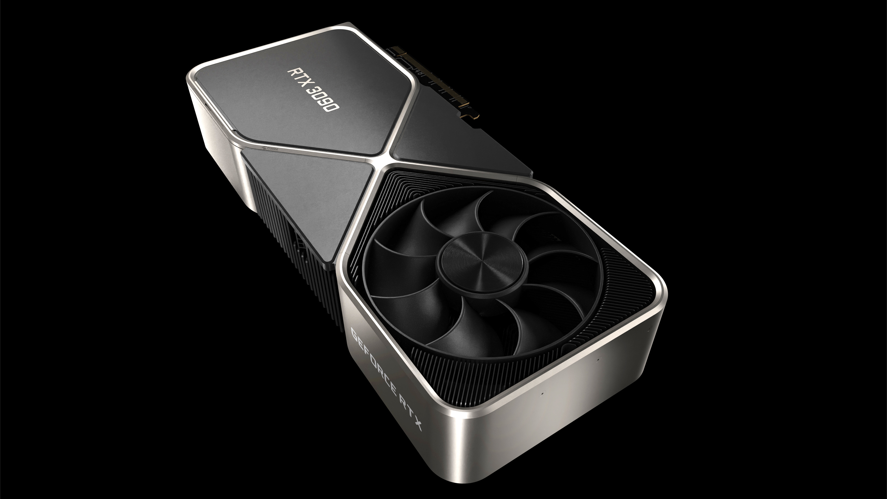
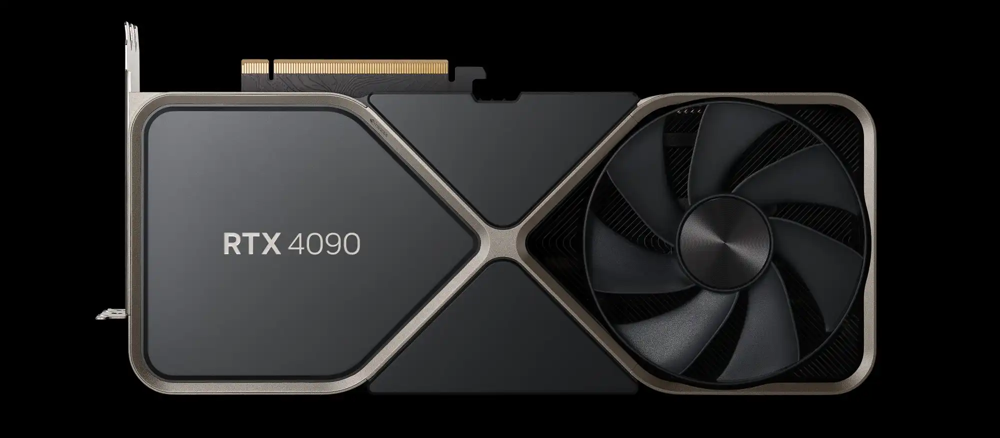

Ebben rövid kis cikkben az RTX 3090 és RTX az 4090 videokártyákat akarom összhasonlitani, és ezzel szeretném érzékeltetni, hogy mekkora különbség lehet két egymás után lévő generáció között. Röviden, de legfontosabb adatokra fogok kitérni.
| Részegységek | RTX 3090  |
RTX 4090  |
|---|---|---|
| Architektúra | Ampere | Ada |
| Processzor | GA102 | AD102 |
| Gyártási technológia | Samsung 8nm | TSMC 4nm |
| CUDA magok | 10496 | 16384 |
| RT magok | 82 (2. generáció) | 128 (3. generáció) |
| Tensor magok | 328 (3. generáció) | 512 (4. generáció) |
| GPU Boost órajel | 1695 MHz | 2520 MHz |
| Memória | 24 GB GDDR6X | 24 GB GDDR6X |
| Memória busz szélesség | 384-bit | 384-bit |
| Tranzisztorok | 28.3 milliárd | 76.3 milliárd |
| Kijelző csatlakozások | 3db DP 1.4a, 1db HDMI 2.1 | 3db DP 1.4a, 1db HDMI 2.1 |
| TDP | 350W | 450W |
| Ár | 1500$ MSRP | 1600$ MSRP |